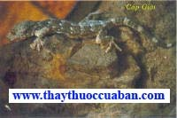

Hen phế quản mãn tính nên ăn
gì...?
Hen phế quản mãn tính nên ăn
gì...?
 Tinh trùng yếu vẫn sinh con trai
Tinh trùng yếu vẫn sinh con trai
Tên khác
Tên Hán Việt khác:
Vị Thuốc cáp giới còn gọi Tiên thiềm (Bản Thảo Cương Mục), Cáp giải (Nhật Hoa Tử Bản Thảo), Đại bích hổ (Trung Quốc Dược Học Đại Từ Điển).
Tên khoa học: Gekko gekko Lin.

Họ: Tắc Kè (Gekkonidae).
Cáp giới (Tắc Kè)
( Mô tả, hình ảnh, thu hái, chế biến, thành phần hoá học, tác dụng dược lý ....)
Mô tả:
 Tắc kè hình dáng gần giống như con Thạch
sùng (hay con Thằn Lằn, nhưng to hơn nhiều. Có loại da màu nâu đen, hoặc
nâu xanh, loại thì màu xám lưng có chấm lốm đốm. Con đực da sần sùi,
miệng rộng, đuôi nhỏ mà dài, con cái da mịn nhẵn, miệng bé, đuôi lớn mà
ngắn hơn. Phần bụng phình to có 4 chân, ngón chân có màng mỏng, có thể
leo bò trên các vách núi treo leo và trên cây. Mình dài koảng 10-17cm (chưa
kể phần đuôi) đuôi có thể dài bằng phần mình, miệng có hai hàm răng nhọn.
Tắc kè sống ở vách núi hay các hốc thân cây trong rừng. Cũng thường sống
thành từng đôi một (một đực, một cái). Sách cổ nói con đực kêu “tắc” con
cái kêu “kè” nhưng thực tế một con có thể kêu cả hai tiếng “Tắc kè”. Nếu
dùng Tắc kè ngâm thuốc thường phải kiếm đủ cả đôi. Ban ngày mắt của nó
lóa lên nên chỉ đi kiếm mồi vào ban đêm, chúng chỉ thích ăn những loại
sâu bọ có cánh, lúc bắt mồi động tác rất nhanh nhẹn, linh hoạt. Vào
khoảng tháng 4 bắt đầu mùa hoạt động của Tắc kè, tháng 5-6 là tháng hoạt
động nhanh nhất, cuối tháng 10 đã ít thấy, sau tiết Sương giáng thì đã
bắt đầu bước vào ngủ qua đông, nó nằm im trong mùa đông không hoạt động.
Nếu bắt Tắc kè bỏ vào lồng sắt mà thời gian ấy là mùa nóng thì chúng dễ
bị chết, nhưng gặp điều kiện khí hậu thích nghi thì tuy qua mấy tháng
không cho ăn nhưng Tắc kè vẫn sống. Những con nuôi trong lồng như thế
thì khoảng tháng 5-6 đã đẻ nhiều trứng màu trắng vỏ mềm, một lần đẻ hai
trứng, chừng 100 ngàysau bắt đầu nở (3 tháng 10 ngày), không phải ấp,
Tắc kè con sau khi nở 3-4 năm sau mới trưởng thành.
Tắc kè hình dáng gần giống như con Thạch
sùng (hay con Thằn Lằn, nhưng to hơn nhiều. Có loại da màu nâu đen, hoặc
nâu xanh, loại thì màu xám lưng có chấm lốm đốm. Con đực da sần sùi,
miệng rộng, đuôi nhỏ mà dài, con cái da mịn nhẵn, miệng bé, đuôi lớn mà
ngắn hơn. Phần bụng phình to có 4 chân, ngón chân có màng mỏng, có thể
leo bò trên các vách núi treo leo và trên cây. Mình dài koảng 10-17cm (chưa
kể phần đuôi) đuôi có thể dài bằng phần mình, miệng có hai hàm răng nhọn.
Tắc kè sống ở vách núi hay các hốc thân cây trong rừng. Cũng thường sống
thành từng đôi một (một đực, một cái). Sách cổ nói con đực kêu “tắc” con
cái kêu “kè” nhưng thực tế một con có thể kêu cả hai tiếng “Tắc kè”. Nếu
dùng Tắc kè ngâm thuốc thường phải kiếm đủ cả đôi. Ban ngày mắt của nó
lóa lên nên chỉ đi kiếm mồi vào ban đêm, chúng chỉ thích ăn những loại
sâu bọ có cánh, lúc bắt mồi động tác rất nhanh nhẹn, linh hoạt. Vào
khoảng tháng 4 bắt đầu mùa hoạt động của Tắc kè, tháng 5-6 là tháng hoạt
động nhanh nhất, cuối tháng 10 đã ít thấy, sau tiết Sương giáng thì đã
bắt đầu bước vào ngủ qua đông, nó nằm im trong mùa đông không hoạt động.
Nếu bắt Tắc kè bỏ vào lồng sắt mà thời gian ấy là mùa nóng thì chúng dễ
bị chết, nhưng gặp điều kiện khí hậu thích nghi thì tuy qua mấy tháng
không cho ăn nhưng Tắc kè vẫn sống. Những con nuôi trong lồng như thế
thì khoảng tháng 5-6 đã đẻ nhiều trứng màu trắng vỏ mềm, một lần đẻ hai
trứng, chừng 100 ngàysau bắt đầu nở (3 tháng 10 ngày), không phải ấp,
Tắc kè con sau khi nở 3-4 năm sau mới trưởng thành.
Phân biệt:
 (1) Cần phân biệt
với con Tắc kè, Cắt kè, Tò te hay rồng đất, có hình dáng như con trên
nhưng nhỏ hơn, con đực có
gờ gai lưng phát triển hơn con cái. Sống ở bụi cây ven suối, bơi giỏi.
Rồng đất tên khoa học Physygnathus cocincinus.
(1) Cần phân biệt
với con Tắc kè, Cắt kè, Tò te hay rồng đất, có hình dáng như con trên
nhưng nhỏ hơn, con đực có
gờ gai lưng phát triển hơn con cái. Sống ở bụi cây ven suối, bơi giỏi.
Rồng đất tên khoa học Physygnathus cocincinus.
(2) Khác với con Giác thiềm (Phrinosoma
cornuta).
Địa lý:
Sống trong các hốc đá, hốc cây các miền núi rừng khe hốc nhà cao khắp nơi trong nước Việt Nam.
Phần dùng làm thuốc: Dùng cả con còn đủ đuôi đã bỏ nội tạng, căng thẳng phẳng phơi sấy khô. Thường dùng chân trước đến chân sau dài 9,7cm, nếu nhỏ hơn kích thước trên thì thuộc vào loại bé.
Cách bắt và nuôi
 (1) Người ta thường lắng nghe nó kêu ở
chỗ nào thì tìm bắt.
(1) Người ta thường lắng nghe nó kêu ở
chỗ nào thì tìm bắt.
a) Dùng tóc để bắt, thường về lúc chập tối người ta dùng gậy tre nhỏ, đầu gậy có buộc những nắm tóc, bó thành tụm tua tủa rồi luôn vào những hốc trên cây, Tắc kè tưởng là mồi (các loại sâu có cánh mỏng) liền nhảy ra vồ ăn, lúc đó kéo ra ngay thì sẽ bắt được.
b) Dùng ánh sáng để bắt, vào khoảng 7-10 giờ tối, Tắc kè thường bò ra khỏi lỗ hang xuống dưới kiếm mồi, dùng đèn pin soi vào tắc kè sẽ nằm im nhanh nhanh ta tóm lấy cổ.
c) Dùng móc sắt để bắt về mùa hè nóng nực, Tắc kè thường bò ra ngoài hốc để ngóng mát.Vì ban ngày chúng hay bị lóa mắt, cho nên nhanh nhẹn dùng móc sắt móc vào hàm trên hay hàm dưới rồi lấy tay túm chặt lấy cổ bắt bỏ vào lồng.
Cách nuôi:
a) Làm núi giả, tìm chỗ khô ráo, rồi lấy đá và gạch xây thành núi giả rỗng giữa. Núi giả gồm vách xung quanh và lồng rỗng có cửa vào. Làm vách núi sau khi san bằng nền, dùng gạch xây thành vách cao 3m, rộng 2,3m, dài 3m, trên vách có để những lỗ nhỏ cách mặt đất độ 1m, trên nóc có để một cửa thông lên trên, bên một vách có một cửa sổ, một bên có cửa ra vào sau đó đắp đá ra ngoài có chất hồ cẩn thận ở những chỗ có lỗ thì vẫn chừa ra thành hang sâu. Sau khi xây xong bên ngoài chỉ trông thấy đá không thấy gạch. Cửa sổ hang đều lấy thép vít lại, cửa ra vào cũng làm bằng lưới thép. Làm lòng núi cần xây một hòn núi giả con, dài 1-7m, rộng 1m, một đầu xây nối liền với vách tường nóc núi giả. Chỗ cách đất 1m có chừa những lỗ nhỏ làm hang cho nó ở. Bốn chung quanh có chừa lối đi để tiện quan sát.
b) Nuôi: Tắc kè thích ăn những côn trùng bộ cánh mỏng. Ban đêm dùng đèn dầu để những côn trùng tập trung cho Tắc kè bắt (Tắc kè không sợ ánh sáng lờ mờ). Nếu ăn không đủ no phải cho ăn mồi thêm. Nếu trong hang không đủ ẩm thì phải phun thêm nước vào cho đủ ẩm. Tối lúc lên đèn thắp đèn ở núi giả cho những sâu bọ có cánh bay vào để Tắc kè bắt ăn, nếu không đủ ta phải bắt thêm cho ăn từng bữa, ban ngày lóa mắt cho nên ít hoạt động.
Bào chế:
(1) Dùng búa đập đầu cho Tắc kè chết, từ bụng trở xuống buộc vào giá căng lấy dao con nhọn sắc, mổ từ đít lên đến hai chân trước, dùng giẻ sạch hoặc bông thấm cho sạch khô máu ở mình, không được rửa bằng nước, đồng thời móc vứt hai mắt đi vì mắt có chất độc, sau đó căng trên chiếc giá phơi hay sấy khô. Giá gồm 1 thanh tre dọc hay hai thanh tre ngang, 2 thanh ngang để căng 4 chân. Sau khi căng lên giá thì dùng than để sấy khô. Cứ hai con kích thước bằng nhau thì căng lên 1 giá (thường gọi là một đôi đực cái). Cách căng bụng có hai kiểu: - Nẹp kiểu bắt chéo dấu nhân: Một nẹp căng từ chân phải phía trước chéo sang chân trái phía sau, một nẹp cho từ chân trái phía trước néo sangchân phải phía sau - Nẹp kiểu song song: Bụng chia làm hai phần. Phần trên ngực căng một nẹp rộng bản, hình chữ nhật, đặt gần phía hai chân trước. Phần dưới ngực một một nệp rộng bản, hình hơi bán nguyệt vì bụng thót dần, nẹp đặt gần hai chân sau. Một nẹp dài nhỏ, cứng hơn xuyên dưới các nẹp dọc theo xương sống, để khi sấy khô đuôi tắc kè khỏi bị cong. Các nẹp phải bằng cật tre gìa đã ngâm hoặc sấy để tránh mọt. Căng xong, hơ than củi hoặc sấy toàn thân từ từ, đến khô, khi toàn thân đã khô thì chúc đầu xuống, đuôi chổng lên để chỉ sấy riêng đầu. Nhìn thấy khô, tay bóp thấy cứng là được.
(2) Xung quanh mắt và con ngươi của Tắc kè có chất độc cho nên người ta thường hay khoét bỏ mắt khi dùng, khi dùng bỏ vẩy trên đuôi, dưới bụng và trên thịt. Dùng rượu ngâm cho thấm rồi lấy lửa than rang cách 2 lần giấy cho vàng khô, xong bỏ vào bình sứ treo trên góc nhà phía đông một đêm thì tác dụng trị bệnh tăng lên gấp đôi, nhưng đừng làm hư cái đuôi đi (Lôi Công).
(3) Khi dùng đầu và chân phải rửa bỏ cái rêu của nó bên trong, nếu không sạch được thì lấy sữa khô sao qua để dùng hoặc sao mật (Nhật Hoa Tử Bản Thảo).
(4) Khi dùng sao cho thật vàng, khi thử thì nướng cho thật chín, ngậm một miếng trong miệng rồi chạy mà không thở dồn dập là loại thật. Thứ thuốc này nên dùng vào hoàn tán thì hay hơn (Dụng Dược Pháp Tượng).
Mô tả dược liệu: Cáp giới khô thường được mổ bụng bỏ ruột trong, tứ chi và đầu ngực, dùng cạp tre căng ra, phần đuôi dùng giấy cột trên phiến tre mỏng rộng, căng rộng ra từ đầu tới đuôi dài khoảng 21-32cm. Bộ xương vùng đầu rõ ràng, mắt lõm sâu. Vùng lưng sau khi tróc phiến vảy màu xám xanh làm lộ da dư thừa màu nâu, cột sống giữa và xương hai bên thể hiện dạng cạnh sống lưng lồi lên, tứ chi và phần đuôi nhăn teo nhiều, 5 ngón chân cứng cong có lỗ hút. Con nào có thịt trắng mùi thơm còn nguyên đuôi không sâu mọt là tốt. Không dùng con đã mất đuôi, hoặc đuôi bị chắp. Vì hiệu lực của Tắc kè là do đuôi của nó.
Vị thuốc Cáp giới
( Công dụng, Tính vị, quy kinh, liều dùng .... )
Tính vị:
Vị mặn tính bình có độc ít.
Qui kinh:
Nhập kinh Phế, Thận
Công dụng:
Bổ phế, bình suyễn, bổ thận tráng dương.
Liều dùng:
Dùng từ 2g- 6g, tán bột trộn vào thuốc làm hoàn.
Ứng dụng lâm sàng của vị thuốc Cáp giới
Ho phù mặt, tứ chi phù
Tắc kè 1 con đực, 1 can cái (gọi: đôi Cáp giới) có đầu và đuôi theo cách biến chếtrên, hòa mật tẩm sao cho chín rồi dùng Nhân sâm thượng hạng giống hình người nửa lượng tán bột, Sáp ong nóng chảy 4 lượng, trộn thuốc trên làm thành 6 cái bánh, mỗi lần nấu cháo nếp lấy 1 chén trộn với cái bánh trên khuấy ra ăn lúa nóng (Phổ Tế Phương).
Kém ăn, gầy còm, suy dinh dưỡng, tinh thần mệt mỏi, chẻ trậm lớn
Dùng 1-2 con Tắc kè to còn cả đuôi, chặt bỏ 4 bàn chân, chặt bỏ đầu từ 2 u mắt trở lên, lột da, mổ bụng, bỏ ruột rửa sạch. Sau khi làm xong chặt từng miếng cho thêm Gừng, chữa (Trung Quốc Dược Học Đại Từ Điển).
Phế hư, ho lâu ngày không lành, phế tích tụ hư nhiệt lại thành ung, ho ra máu mủ
Cáp giới, A giao, Lộc giác giao, Tê giác (Sống), Linh dương giác, mỗi thứ 2 chỉ rưỡi, dùng 3 thăng nước sống sắc còn nửa thăng trong nồi bằng bạc hay sành uống ngày 1 lần (Trung Quốc Dược Học Đại Từ Điển).
Bổ phế bình suyễn, trị suyễn lâu năm, Di tinh, ho suyễn, ho ra máu do Phế Thận bất túc
Cáp giới tán bột, lần uống 5 phân ngày uống 2-3 lần với nước đường cát trắng khuấy nước cơm (Lâm Sàng Thường Dụng Trung Dược Thủ Sách).
Trị Phế Thận đều hư, ho lâu không bớt
Cáp giới 1 cặp, Nhân sâm 1 chỉ 5 tán bột, lần uống 5 phân, ngày uống 2-3 lần với nước cơm (Sâm Cáp Tán - Lâm Sàng Thường Dụng Trung Dược Thủ Sách).
Trị ho suyễn, tổn thương phế, trong đờm có lẫn máu
Cáp giới 2 chỉ, Tri mẫu, Bối mẫu, Lộc giao (chưng), Anh bì, Hạnh nhân, Tỳ bà diệp, Đảng sâm mỗi thứ 3 chỉ, Cam thảo 1 chỉ, sắc uống (Cáp Giới Thang - Lâm Sàng Thường Dụng Trung Dược Thủ Sách).
Bổ thận tráng dương, trị Di tinh, liệt dương do Thận dương bất túc
Cáp giới 1 cặp tán bột, mỗi lần 1 chỉ ngày uống hai lần với rượu ngọt (Lâm Sàng Thường Dụng Trung Dược Thủ Sách
Tham khảo:
Kiêng kỵ:
Ho suyễn do ngoại tà phong hàn, người có thực nhiệt cấm dùng.
Bảo quản:
Tắc kè dễ bị hư hỏng do sâu, mọt, đục khoét. Chuột rất thích ăn Tắc kè, nhất là đuôi. Tắc kè sấy xong phải cho vào thùng kín. Trong thùng có thể để lẫn Long não, Tế tân. Nếu có điều kiện thì cho thêm chút hút ẩm như Silicagel, gạo rang. Về mùa xuân mùa hè cứ sau 10 ngày sấy 1 lần. Sấy bằng than củi hoặc tủ sấy ở 60-700C. Sấy toàn thân, đầu phải sấy kỹ. Khi sấy cần sấy kỹ. Khi sấy cần chú ý, đuôi phải chổng lên vì đuôi là bộ phận chủ yếu lại nhiều chất béo. Nhiệt độ nóng quá có thể làm chất béo chảy. Về mùa thu và mùa đông sau một ngày sấy 1 lần. Mỗi lần sấy song vuốt lại sửa nẹp ngay ngắn. Không nên sấy Tắc kè bằng diêm sinh vì diêm sinh làm biến chất, màu sắc bóng bị bạc, thân bị mốc.
Rượu Tắc kè
Tắc kè 24g-Đảng sâm 40g Huyết giác 3g, Trần bì 3, Tiểu hồi 1, đường rượu đủ 1000ml uống tối trước khi đi ngủ 1 cốc con (30ml). Trị thận suy dương kém, đau lưng, mỏi gối, đái rắt, hen suyễn thuộc hàn.
Tập tính và sinh trưởng:
Các vùng nông thôn Việt Nam, nhiều gia đình đã nuôi tắc kè, nó ở trong các hốc cây, cột nhà hoặc nằm ở dưới các lớp ngói âm dương. Tắc kè hoạt động săn mồi về ban đêm là chủ yếu, nó ăn sâu bọ, gián, muỗi, ruồi, nhện và các loài bọ cánh cứng khác. Mùa đông, khi nhiệt độ xuống dưới 20oC thì tắc kè ngủ đông. Mùa xuân về, thời tiết ấm áp, những tiếng kêu: “tắc kè, tắc kè… è” là tiếng gọi bạn tình trong mùa động dục. Da tắc kè có nhiều màu óng ánh luôn thay đổi theo môi trường với mực đích ngụy trang để trốn tránh kẻ thù. Nếu khi bắt được tắc kè mà túm lấy đuôi nó, lập tức đuôi sẽ đứt lìa giúp cho tắc kè chạy thoát. Tắc kè cũng giống như con thằn lằn, đứt đuôi là hình thức tự vệ và nó sẽ tái sinh đuôi khác. Tắc kè thuộc họ bò sát nhưng không có nọc độc. Khi tắc kè được 6 đến 7 tháng tuổi đạt trọng lượng khoảng 80g trở lên thì bắt đầu đẻ trứng, một tháng đẻ một lần mỗi lần đẻ từ 2 đến 5 trứng.Chúng đẻ liên tục trong nhiều năm, trứng bám vào vách tường hoặc thân cây sau 2 đến 3 tháng thì nở. Tắc kè con thường sống chung tổ với bố mẹ, chúng chỉ đi tìm tổ mới khi tổ cũ đã quá đông các thành viên.
Thức ăn:
Tắc kè ăn các loại côn trùng còn sống như: dế mèn, gián, châu chấu, trùn quế, sâu, mối, nhện...
Nơi mua bán vị thuốc CÁP GIỚI (TẮC KÈ) đạt chất lượng ở đâu?
Trước thực trạng thuốc đông dược kém chất lượng, nguồn gốc không rõ ràng,... xuất hiện tràn lan trên thị trường, làm ảnh hưởng tới hiệu quả điều trị cũng như ảnh hưởng tới sức khỏe của bệnh nhân. Việc lựa chọn những địa chỉ uy tín để mua thuốc đông dược là rất quan trọng và cần thiết. Vậy khách hàng có thể mua vị thuốc CÁP GIỚI (TẮC KÈ) ở đâu?
CÁP GIỚI (TẮC KÈ) là vị thuốc nam quý, được sử dụng rộng rãi trong YHCT. Hiện tại hầu hết các cửa hàng thuốc đông dược, phòng khám đông y, phòng chẩn trị YHCT... đều có bán vị thuốc này. Tuy nhiên người mua nên chọn những địa chỉ có uy tín, đảm bảo chất lượng, có giấy phép hoạt động để mua được vị thuốc đạt chất lượng.
Với mong muốn bệnh nhân được sử dụng những loại dược liệu đúng, chất lượng tốt, phòng khám Đông y Nguyễn Hữu Toàn không chỉ là đia chỉ khám chữa bệnh tin cậy, uy tín chất lượng mà còn cung cấp cho khách hàng những vị thuốc đông y (thuốc nam, thuốc bắc) đúng, chuẩn, đạt chuẩn chất lượng. Các vị thuốc có trong tiêu chuẩn Dược điển Việt Nam đều được nghành y tế kiểm nghiệm đạt chất lượng tiêu chuẩn.
Vị thuốc CÁP GIỚI (TẮC KÈ) được bán tại Phòng khám là thuốc đã được bào chế theo Tiêu chuẩn NHT.
Giá bán vị thuốc CÁP GIỚI (TẮC KÈ) tại Phòng khám Đông y Nguyễn Hữu Toàn: Gọi 18006834 để biết chi tiết
Tùy theo thời điểm giá bán có thể thay đổi.
+ Khách hàng có thể mua trực tiếp tại địa chỉ phòng khám: Cơ sở 1: Số 481 lô 22 Lê Hồng Phong, Phường Gia Viên, Thành phố Hải Phòng
+ Mua trực tuyến: Thuốc được chuyển qua đường bưu điện. Khi nhận được thuốc khách hàng thanh toán tiền COD.
Tag: cay cap gioi (tac ke), vi thuoc cap gioi (tac ke), cong dung cap gioi (tac ke), Hinh anh cay cap gioi (tac ke), Tac dung cap gioi (tac ke), Thuoc nam
Thaythuoccuaban.com Tổng hợp
*************************